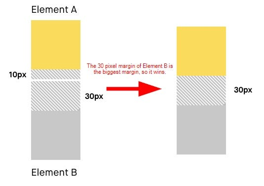
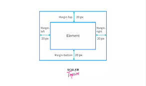

Understanding CSS Concepts
Box Model in CSS
The CSS box model is a design concept that describes how elements on a webpage are rendered by the browser. It consists of content area, padding, border, and margin. The box-sizing property is used to alter the default CSS box model. The box-sizing: border-box value includes padding and borders in the element's total width and height.

CSS Clearfix Hack
A "clearfix hack" is a technique used to clear floats when elements inside a container do not automatically push the height of the container. It is required when floating elements inside a container cause the parent element to collapse. Applying a clearfix hack ensures that the parent container expands to contain its floated children.

Margin Collapse and Margin Values
Margin collapse occurs when the top and bottom margins of two elements are touching. In such cases, the margins do not add up, but the larger of the two margins applies. The margin: auto property is used to horizontally center an element by automatically adjusting the margins. Negative margin values can be used to move an element in the opposite direction.
 Holy Grail Layout Problem
The Holy Grail layout refers to a web design setup with a header, footer, and three columns, where the center column is the longest. Achieving this layout was challenging due to constraints like equal height columns and flexible width.
Modern Ways to Achieve Holy Grail Layout
Modern ways to achieve the Holy Grail layout include using flexbox and CSS grid. Flexbox allows for easy alignment and distribution of space among elements, making it simpler to create complex layouts. CSS grid provides a two-dimensional layout system, enabling the easy creation of grid structures for webpage designs.